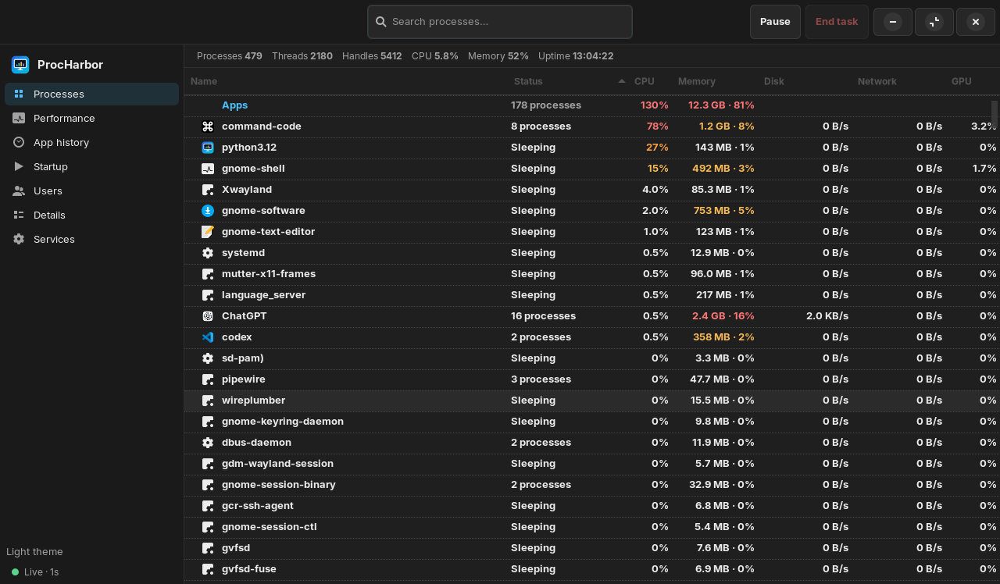

Apps, Background and System
Desktop applications, user background services and root/kernel processes are separated into three sections. Groups start collapsed; expand one to see its subprocesses.
A lightweight native Linux task manager and system monitor written in Rust.
Apps, background and system processes, app icons, load-coloured CPU and
memory, live performance graphs, per-core clocks, Wi-Fi, GPU, startup and systemd
services — straight from /proc and /sys.
No root daemon, no telemetry, no network access, and zero Python runtime overhead.

Built for Linux, not a port. The interface follows the familiar task manager layout while reporting real kernel data.
Desktop applications, user background services and root/kernel processes are separated into three sections. Groups start collapsed; expand one to see its subprocesses.
CPU and memory numbers shift through amber, orange and red as load rises. Memory also shows its percentage of total RAM, so the colour has context.
Processes are matched to their desktop entries and application icons, with sensible fallbacks for kernel threads, daemons and command-line tools.
Live CPU, memory, disk, Wi-Fi and GPU charts, per-core clocks and utilisation, package temperature and NVMe temperature.
User autostart entries, enabled systemd user services and system services with their main PIDs. WARP's taskbar is shown as warp-taskbar.service.
Per-process disk I/O, per-process network attribution, GPU engine time from DRM fdinfo, handles as file descriptors, and an app history table.
Grab the standalone package for your architecture and install it with apt. Standalone native binary with zero runtime dependencies.
# Debian / Ubuntu — x86_64
sudo apt install ./procharbor_1.3.0_amd64.deb
# arm64 / aarch64
sudo apt install ./procharbor_1.3.0_arm64.deb
# Launch
procharborOr run from source with ./run.sh or cargo run --release.
sudo apt remove procharbor.
Ubuntu 22.04+, Debian 12+, Arch, Fedora or any modern Linux desktop on Wayland or X11.
Standalone native Rust binary compiled with GPU acceleration (glow/OpenGL).
Wi-Fi link details use iwconfig when available; per-process
network attribution uses ss.